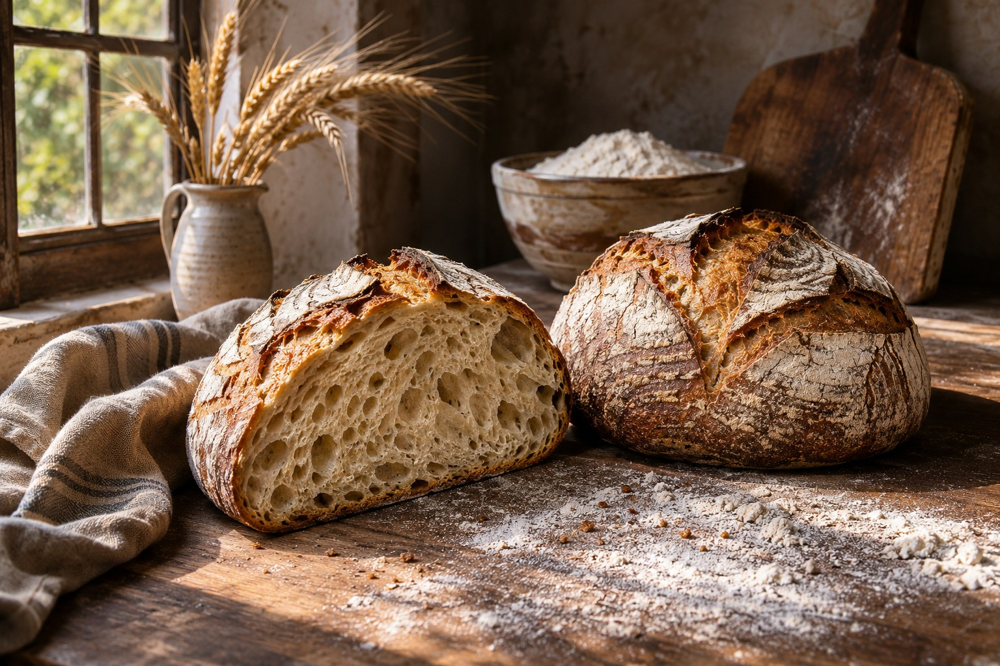

Aus unserer Backstube
Zeit für
Zeit für
Kruste.
Unser Roggensauer ruht über Nacht. Morgens zieht der erste Laib mit kräftiger Kruste aus dem Steinofen.
Was kommt wann aus dem Ofen?
Ab 7 Uhr gibt es Roggenlaib, ab 9 Uhr das helle Landbrot. Samstags
kommt um 10 Uhr das Walnussbrot dazu.
